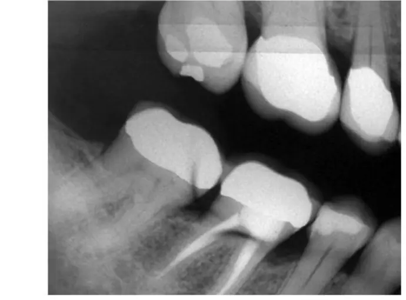
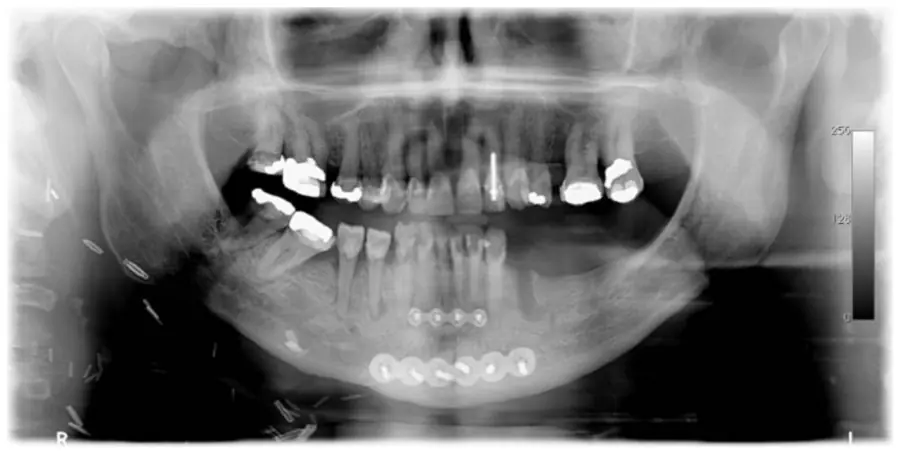

نسخه استخراجشده؛ ترجمه یا تأیید علمی انجام نشده است. وضعیت: captured
یک بررسی مرگ فورنزیک شایسته، چهار هدف دارد: «تعیین وسیله، شیوه، و علت مرگ، و شناسایی بقایا.»

و پنج روش اصلی شناسایی بدن — هرکدام با نقطهضعف خودش:
و یک روش امیدبخش ولی نابالغ: «مورفولوژی سینوس فرونتال با توجه به تنوعش در جمعیت، برای مقایسهی تصاویر پیش و پس از مرگ به کار رفته است — ولی در حال حاضر پشتوانهی پژوهشی تجربی اندکی دارد.»
و چرا شناسایی دندانی بر بقیه برتری دارد؟ چهار دلیل: «آزمون تجربی نشان داده که وقتی تصاویر پیش از مرگ در دسترس باشند، قابل اعتماد و سرراست است، بهآسانی در دادگاهها پذیرفته میشود، برای هیئتمنصفه قابل فهم است، و سریع و ارزان است.»
و چرا تصاویر تشخیصی چنین ارزشمندند؟ «شواهد عینی از شرایط پیش و پس از مرگ میدهند.» و برتریشان بر چارت: «تصاویر فیلمی و دیجیتال یک سابقهی دائمی از وضعیت پیش از مرگاند و سوءتفسیرشان دشوار است. در برابر، چارتنویسی دندانی یک دندانپزشک ممکن است مستقیماً با چارتنویسی دندانپزشک دیگر از همان بیمار قابل مقایسه نباشد.»
و یک واقعیت عملی و یک مرز اخلاقی صریح: «دندانپزشکانی که مراقبت مبتنی بر شواهد انجام میدهند، در هر قرار ملاقات بهطور روتین تصویر داخلدهانی نمیگیرند» — پس تصاویر باید همراه با چارت دندانی تحلیل شوند. و مرز اخلاقی: «تصاویر پیش از مرگ هرگز نباید به قصد فراهم کردن سابقه برای مقایسهی بعدی گرفته شوند، حتی در گروههای پرخطر مانند مجرمان محکوم یا افراد شاغل در تجارت جنسی.»
و حاصل ترکیب چارت و تصاویر با تاریخ معلوم، یک ادنتوگرام پیش از مرگ است — «سابقهای از دندانهای بیمار که میتواند با شرایط پس از مرگ برای شناسایی مقایسه شود».
فرایند شناسایی با معیارهای دندانی را بورد آمریکایی ادنتولوژی فورنزیک (ABFO) تعریف کرده است: دندانپزشک فورنزیک «نقاط توافق (تطابق) میان تصاویر پیش و پس از مرگ را شناسایی و بهصورت عددی در گزارش فهرست میکند».

و مهمترین نکتهی این درس، که برخلاف انتظار بسیاری است: «هیچ شمار مشخصی از نقاط برای انجام یک شناسایی لازم نیست.»
و منطقش را با یک مثال بفهم: «فردی که پیش از مرگ بیدندان بوده ممکن است ۳۲ نقطهی تطابق دندانی با دیگر نامزدهای بیدندان نداشته باشد. ولی اگر دندانهایی با ترمیم حضور داشته باشند، این ممکن است اطلاعات یکتای کافی برای حذف همهی نامزدهای دیگر و تطابق با تنها یک متوفای احتمالی فراهم کند.»
و نقاط تطابق مفید کداماند؟ «دندانهای خاص موجود، ویژگیهای یکتا مانند شکل تاج و ریشهها، حضور ترمیمها شامل موادی که به کار رفتهاند از جمله مادهی اندودانتیک، و شکلهای یکتای ترمیمها.»
و نقاط مغایرت هم باید فهرست شوند — با یک تفکیک حیاتی:
و پیامد قاطعش: «مغایرتهای غیرقابل توضیح، اگر بیپاسخ بمانند، شناسایی مثبت با ابزار دندانی را ناممکن میکنند.»
وقتی شناسایی ممکن نیست، دستکم میتوان سن را تخمین زد: «ارزیابی سن تکاملی دندانهای فرد با تصویربرداری تشخیصی ممکن است به دندانپزشک فورنزیک اجازه دهد سن تقویمی را تخمین بزند.»
و روشش: «فرایندی که در آن سن تکاملی دندانها با سنهای تکاملی دندانی متناظر یک جمعیت استاندارد مقایسه میشود تا تخمینی از سن تقویمی به دست آید.»
و کاربردی در زندگان هم دارد: «این فرایند میتواند روی افراد زنده هم انجام شود؛ برای مثال در شناسایی افراد برای تأیید سن قانونی.»
و روشهای دیگر تعیین سن تقویمی (خارج از دندان): «تعیین سن تکاملی استخوانهای مچ و دست، ارزیابی سینکندروز اسفنواکسیپیتال، و بلوغ ترقوه.»
و یک هشدار روششناختی جدی: «همهی تعیینهای سن، نرخ خطای همراه دارند.» و «کمیسازی نرخ خطا در علوم فورنزیک مقایسهای مسئلهساز بوده است». پس «ضروری است دندانپزشک فورنزیک منابع ذاتی خطای علمی را بفهمد و در انتخاب زبان بیانیههای رسمی محتاط باشد».
و یک نقش دیگر دندانپزشک فورنزیک: «آسیبهای جای گاز — شناسایی، مستندسازی، و تحلیل آسیبها»، شامل «مقایسهی یک دندان شناختهشده با جای گاز در مادهای که میتواند پوست انسان باشد». و رادیولوژی دهان «اغلب دادههای عینی مفید برای پشتیبانی از نظر دندانپزشک فورنزیک» فراهم میکند.
سازماندهی: اگر حادثه از توان مدیریت مطمئن مقامات محلی بزرگتر باشد، تیمهای آموزشدیده و باتجربهی بیرون از حوزهی محلی فراخوانده میشوند؛ این موقعیت جای دندانپزشک خوشنیت بیآموزش نیست. معمولاً سه تیم تشکیل میشود: پیش از مرگ (گردآوری و تلفیق دادهها)، پس از مرگ (معاینه، تصویربرداری و چارت بقایا) و مقایسه (انجام شناسایی)؛ و در هر تیم دستکم دو عضو کار میکنند تا خطاها پیدا شوند.
نرمافزار و کدگذاری: نرمافزارهای مقایسه تطابقها و عدمتطابقهای ممکن را با الگوریتمهای ساده رتبهبندی میکنند، ولی هر شناسایی نهایی را خبرهی انسانی انجام میدهد. و برخلاف شهود، هرچه جزئیات دندانی کمتری در سامانهی کدگذاری وارد شود بهتر است؛ جزئیات بیش از حد شانس رد کاذب یک تطابق را بالا میبرد.
بقایای بلندمدت: در ایالات متحده در هر زمان حدود ۱۰۰٬۰۰۰ پروندهی فعال گمشدگان و ۴۰٬۰۰۰ مجموعه بقایای انسانی وجود دارد؛ وضعیتی که «فاجعهی جمعی خاموش و کند» نامیده شده است. لایهبندی جمعیتی، یعنی مرتبسازی افراد بر پایهی جنسیت، سن و به میزان کمتر پیشینهی نژادی یا قومی، احتمال شناسایی مثبت را بالا میبرد. سازمانهایی مانند NamUs، NCIC و INTERPOL این مقایسهها را انجام میدهند و هرچه این اطلاعات گستردهتر منتشر شود، سود بیشتر است.